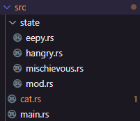

Giving types functionality
Next we’re going to learn how to add functionality to data by modelling a common emotional pattern followed by my cat, Yuki.
Yuki States
We’ll model 3 emotional states of my Cat, give him behaviours unique to each state, and allow him to transition between those states.

So what is the behaviour we want to model in these states?
Mischievous
- We’ll initialise Yuki in the Mischievous state because that’s how he wakes up.
- In this state he’ll make a lot of fun little noises
- He’ll also try to get up to various naughtiness
- If we forget to feed him he’ll get Hangry
Hangry (Hungry and Angry)
- While hangry, he only really makes one noise, a desperate plea to “pay attention and do your job”
- He’ll get hyper focused on you getting your attention and may choose violence
- Once he’s eaten, he’ll get Eepy
Eepy (Sleepy)
- Once he’s eaten, he’ll get sleepy, he won’t make any noises he’ll just settle down in one of his beds
- Once he’s slept, he’ll get back to his mischeivous state
Making a Cat
Let’s create a new project with cargo new yuki-state-machine and open it in our IDE of choice.
For this project we’re going to need to organise our code a bit. We’ve talked a little bit about modules before, they’re
Rust’s way of organising and grouping code. We’ve created modules to contain tests, that we’ve then excluded from our
build. You can create them with the mod keyword, then a name, then either:
- a block of code surrounded by curly brackets
- a file called the same thing as the module (e.g.
mod my_moduleand a file calledmy_module.rs) - a directory called the same thing as the module and a file called
mod.rs(e.g.mod my_moduleand a file calledmy_module/mod.rs)
We’re going to use all of these techniques in this project, though only the latter two today.
To organise our cat code away from the main binary, lets create a cat module inside our main file, so it looks something like this:
// File: main.rs
mod cat;
fn main() {
println!("Hello, world!");
}If you’re using VSCode, RustRover or similar, you might be able to use the context menu to create cat.rs by
putting the cursor over cat and activating the context actions (in VSCode that’s Ctrl/⌘ + ., in IntelliJ
products like RustRover it’s Alt/⌥ + enter). If you aren’t able to do that, create a file called cat.rs in your
src folder.
Inside our cat.rs file lets create a structure to hold a cat, we’ll make it public by putting the word pub in front
of the struct.
#![allow(unused)] fn main() { // File: cat.rs pub struct Cat { name: String, } }
We can access the Cat struct back in our main function either by giving a full reference to the Cat struct in its
module, cat::Cat or by using the use keyword. However, you’ll find we can’t actually create the structure.
// This would be in your `cat.rs`, I need to put it here to make the code work in mdbook mod cat { pub struct Cat { name: String, } } // File: main.rs mod cat; use cat::Cat; fn main() { let yuki = Cat { name: "Yuki".to_string() }; }
|
6 | let yuki = Cat { name: "Yuki".to_string() };
| ^^^^^^^^^^^^^^^^^^^^^^^^ private field
This is because although Cat is public, it’s name is not.
We could, of course, simple make name public, but this means anything can access it at any time and, if your cat is
mutable, the name can be changed. We don’t want anything renaming Yuki, so, we’ll manage the property privately.
To create the object then, we’ll need a “constructor”, a function that is associated with our Cat type, that returns
an instantiated object. To do this we need to use an impl block.
impl
In Rust, code that is associated with specific types is called “implementation” code, and lives inside an impl block.
impl blocks are incredibly flexible, and we’ll see more of this in the next chapter, for now though, the simplest use
of the block is:
impl TypeName {
// code goes here
}Our constructor is simply a function that lives inside the impl block of Cat, takes the cats name, and returns an
instantiated Cat with the given name. One nice thing about impl blocks is that they have a special shortcut when
referring to the type that is being implemented called Self. This means that while we could specifically return
the Cat type, but we could also use Self. There are a lot of benefits to the latter in more advanced code, so we’ll
use that here.
#![allow(unused)] fn main() { // File: cat.rs pub struct Cat { name: String, } impl Cat { pub fn new(name: String) -> Self { Self { name } } } }
Above, the new function takes a String and returns a Cat. Here we can instantiate the Cat type with Self too,
and inside the impl block, we have access to the private name field. Finally, because the name variable is called
the same as thing as the name field, writing Self { name: name } is redundant, we can just write Self { name }.
Let’s make our Cat implementation slightly more useful by adding a function that will get the name of our cat too. In
order to get the name we’ll create a function with a special parameter &self. You might notice a couple of odd things
about this. First, it has no type, and second, the variable self name itself gets the & which would normally be on the
type, to show that it is a reference.
self is a keyword, that translates in the parameters of a function header to self: Self, ie, a variable called
self with the type of whatever the implementation is for. When you use &self it instead translates to self: &Self.
Similarly, &mut self translates to self: &mut Self.
We don’t need to take ownership, or have a mutable reference, so for our function we’ll use &self to get an immutable
reference.
#![allow(unused)] fn main() { // File: cat.rs pub struct Cat { name: String, } impl Cat { pub fn new(name: String) -> Self { // ... Self { name } } pub fn get_name(&self) -> &str { &self.name } } }
Note: We can safely return a reference to owned data at this point because the function acts like any other, there is only one reference coming in,
&self, and one reference going out&str, they must have the same lifetime. Rust will not allow you to compile any code where you keep the&strbeyond the point where whatever the owner of&selfis goes out of scope.
Any implementation function where the first parameter is some form of self may be referred to as a “method”, and is
available on the instantiated type. Any other function in the implementation is called a “static method”.
We can finally create a working program, so returning to main, lets use our new implementation:
// This would be in your `cat.rs`, I need to put it here to make the code work in mdbook mod cat { pub struct Cat { name: String, } impl Cat { pub fn new(name: String) -> Self { Self { name } } pub fn get_name(&self) -> &str { &self.name } } } // File: main.rs // ... use cat::Cat; fn main() { let mut yuki = Cat::new("Yuki".to_string()); println!("Our cat is called {}", yuki.get_name()); }
Great, lets move on to Yuki’s state!
State Machines and Rust
We want to represent three of Yuki’s many “states”, but in particular, we want to move between them in a very specific way.
A naive approach to this could use an enum to represent the states, and then we could have methods that change the
state.
#![allow(unused)] fn main() { // File: cat.rs pub enum CatState { Mischievous, Hangry, Eepy, } pub struct Cat { name: String, state: CatState, } impl Cat { pub fn new(name: String) -> Self { Self { name, state: CatState::Mischievous, // Our default state } } pub fn get_name(&self) -> &str { // ... &self.name } pub fn forget_to_feed(&mut self) { self.state = CatState::Hangry } pub fn feed(&mut self) { self.state = CatState::Eepy } pub fn sleep(&mut self) { self.state = CatState::Mischievous } } }
Here we use methods which take a mutable reference to self (&mut self) so that we can modify the state.
But let’s look again at the diagram:
A Hangry cat doesn’t become Mischievous because it slept. What should happen if we try to call sleep on a Hangry cat?
Should it do nothing? Should it throw an error? Does it even make sense for this to be an option?
Furthermore, if we look back at the specification, a Hangry cat may choose violence, but Eepy cats and Mischievous cats won’t.
Instead, we could use a pattern called a State Machine. In a State Machine we transition fully between different states, and those states have different functionality.
Let’s make our states unit structs instead of an enum
#![allow(unused)] fn main() { // File: cat.rs pub struct Mischievous; pub struct Hangry; pub struct Eepy; }
We can then apply the functionality to each struct in turn:
#![allow(unused)] fn main() { // File: cat.rs pub struct Mischievous; pub struct Hangry; pub struct Eepy; impl Mischievous { pub fn forget_to_feed(self) -> Hangry { Hangry } } impl Hangry { pub fn feed(self) -> Eepy { Eepy } } impl Eepy { pub fn sleep(self) -> Mischievous { Mischievous } } }
This is much more ergonomic as Hangry simply does not have the method sleep, meaning you get compile time checking
that your cat states are being used correctly.
At this point, we don’t have any data about our cat though. There are a few ways we could deal with this. We could extend our states to be the cat like this:
#![allow(unused)] fn main() { // File: cat.rs pub struct Mischievous { name: String, } pub struct Hangry { name: String, } pub struct Eepy { name: String, } impl Mischievous { pub fn new(name: String) -> Self { Self { name } } pub fn forget_to_feed(self) -> Hangry { Hangry::new(self.name) } } impl Hangry { pub fn new(name: String) -> Self { Self { name } } pub fn feed(self) -> Eepy { Eepy::new(self.name) } } impl Eepy { pub fn new(name: String) -> Self { Self { name } } pub fn sleep(self) -> Mischievous { Mischievous::new(self.name) } } }
Note: Each state transition consumes itself, and passes its owned data onto the new state. This saves memory allocations and makes sure that you don’t have an “old” state hanging around.
This is fine… but it’s not very flexible. Instead, we’re going to put the whole cat inside the state.
#![allow(unused)] fn main() { // File: cat.rs // ---------- Cat ---------- pub struct Cat { name: String, } // ---------- States ---------- pub struct Mischievous { cat: Cat, } pub struct Hangry { cat: Cat, } pub struct Eepy { cat: Cat, } }
You might think this is no better, and you’d be right! Whether the cat’s information is stored directly in the state or not we haven’t made this more flexible… but, what if the states were generic?
Generics
Generics are a way that we can create a template where some of the details are filled in later. We’re going to get deeper into this in the next chapter, but we can use rudimentary generics to manage our states.
Functions, Structs and Enums can all be made generic by adding triangle brackets after their name, containing a list of
generic parameters. Very over you might see a single letter generic name, particularly you might see something like
<T> as you do with Option<T>, however, you might want to hint about the purposed of the type like the Error E in
Result<T, E>.
You can even use whole words, though this is seen less.
For our purposes, we’ll use the letter A to represent “Animal”.
#![allow(unused)] fn main() { // File: cat.rs pub struct Mischievous<A> { animal: A, } pub struct Hangry<A> { animal: A, } pub struct Eepy<A> { animal: A, } }
Later we can fill in the Generic and make it a “concrete” type, in our case this will eventually look like
Mischievous<Cat>.
Next we’ll need to update our implementations. Implementations that involve Generic parts, need to list those
after the impl to save confusing implementations on generic types and implementations on concrete variants of generic
types (don’t worry if that doesn’t quite make sense, just remember to put the generic parameters after the impl).
Once we’ve specified the generic parameters of the impl block, we don’t need to respecify them for each function so long
as the type is being used consistently. So, our new functions can use A for the animal parameter, and that will be
linked to our state’s generic A, and our state changes can use A to show that when the state changes, the generic
type will remain the same.
I’m also going to add a quick extra function, describe, to each implementation for use at the end.
#![allow(unused)] fn main() { // File: cat.rs pub struct Mischievous<A> { animal: A, } pub struct Hangry<A> { animal: A, } pub struct Eepy<A> { animal: A, } impl<A> Mischievous<A> { pub fn new(animal: A) -> Self { Self { animal } } pub fn forget_to_feed(self) -> Hangry<A> { Hangry::new(self.animal) } pub fn describe(&self) -> String { "Trying to break into a wardrobe by pulling on exposed clothing".to_string() } } impl<A> Hangry<A> { pub fn new(animal: A) -> Self { Self { animal } } pub fn feed(self) -> Eepy<A> { Eepy::new(self.animal) } pub fn describe(&self) -> String { "Being loud doesn't get what they want, they choose violence and attack!".to_string() } } impl<A> Eepy<A> { pub fn new(animal: A) -> Self { Self { animal } } pub fn sleep(self) -> Mischievous<A> { Mischievous::new(self.animal) } pub fn describe(&self) -> String { "Look at the precious baby sleeping 😍".to_string() } } }
Finally, lets update our cat implementation to return a concrete Mischievous<Cat> type:
#![allow(unused)] fn main() { // File: cat.rs pub struct Cat { name: String, } pub struct Mischievous<A> { animal: A, } impl<A> Mischievous<A> { pub fn new(animal: A) -> Self { Mischievous { animal } } } impl Cat { pub fn new(name: String) -> Mischievous<Cat> { Mischievous::new(Self { name }) } } }
We can now play with all of this in our main function:
mod cat { // Everything here should be in `cat.rs`, I can't do that and have runnable code though ;) pub struct Cat { name: String, } impl Cat { pub fn new(name: String) -> Mischievous<Cat> { Mischievous::new(Self { name }) } } pub struct Mischievous<A> { animal: A, } pub struct Hangry<A> { animal: A, } pub struct Eepy<A> { animal: A, } impl<A> Mischievous<A> { pub fn new(animal: A) -> Self { Self { animal } } pub fn forget_to_feed(self) -> Hangry<A> { Hangry::new(self.animal) } pub fn describe(&self) -> String { "Trying to break into a wardrobe by pulling on exposed clothing".to_string() } } impl<A> Hangry<A> { pub fn new(animal: A) -> Self { Self { animal } } pub fn feed(self) -> Eepy<A> { Eepy::new(self.animal) } pub fn describe(&self) -> String { "Being loud doesn't get what they want, they choose violence and attack!".to_string() } } impl<A> Eepy<A> { pub fn new(animal: A) -> Self { Self { animal } } pub fn sleep(self) -> Mischievous<A> { Mischievous::new(self.animal) } pub fn describe(&self) -> String { "Look at the precious baby sleeping 😍".to_string() } } } use cat::Cat; // File: main.rs // ... fn main() { let mischievous_yuki = Cat::new("Yuki".to_string()); println!("{}", mischievous_yuki.describe()); println!(); let hangry_yuki = mischievous_yuki.forget_to_feed(); println!("{}", hangry_yuki.describe()); println!(); let sleepy_yuki = hangry_yuki.feed(); println!("{}", sleepy_yuki.describe()); println!(); let mischievous_yuki = sleepy_yuki.sleep(); println!("{}", mischievous_yuki.describe()); println!(); }
Tidying up
Before we finish the chapter, our code has gotten a bit messy, we should clean it up. Now that our states are not
Cat specific, they should be moved out of cat.rs.
I recommend splitting your files like this:

You will need to use each state in the appropriate file being used, and you need to make your individual state modules
public in your general state mod.rs.
I’d like you to try to organise this project yourself, but if you get stuck, you can see it on our GitHub.
Next Chapter
This is cool… but we’ve got a slight problem. We can’t get Yuki’s name, and really his actions should belong to him, not be part of the state (I try not to choose violence when I’m hangry for example).
We should move some of this behaviour to the Cat, but type, but how can we access details on our Cat type, when we don’t know that our Generic states will contain Cat’s until runtime?
In the next chapter we’ll discuss Traits which provide a way to resolve this, as well as some other cool things they can do with Generics!